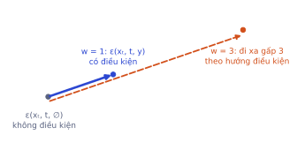
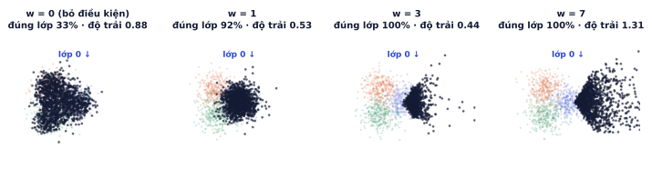
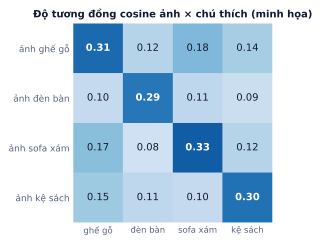

Bài 1
Một bước CFG
tính tayTại một pixel, ε(xₜ, t, ∅) = 0.2 và ε(xₜ, t, y) = 0.5.
Lời giải
w = 1 cho đúng dự đoán có điều kiện 0.5. w = 3 đẩy xa gấp ba theo hướng điều kiện: 0.2 + 0.9 = 1.1. w = 0 bỏ qua điều kiện.
Model ở GĐ2 sinh ảnh ngẫu nhiên: áo hay giày là do may rủi. Đồ án tạo ảnh của bạn cần điều khiển: "vẽ một chiếc túi", rồi "một chiếc ghế gỗ màu trắng". Bài này đi từ điều kiện theo lớp, tới kỹ thuật classifier-free guidance mà mọi model tạo ảnh đều dùng (có thí nghiệm thật trên dữ liệu 2D), rồi tới cách đưa câu mô tả vào model qua CLIP và cross-attention.
Mọi sản phẩm tạo ảnh đều là "sinh có điều kiện": theo prompt, theo ảnh mẫu, theo bản phác. Cơ chế cơ bản nhất (thêm điều kiện + guidance) giống nhau ở mọi model, từ Fashion-MNIST 10 lớp tới Stable Diffusion. Tham số guidance_scale mà khách hàng hỏi "chỉnh bao nhiêu" chính là phần lý thuyết của bài này.
Thêm nhãn lớp y làm đầu vào thứ ba: model thành ε_θ(xₜ, t, y). Cách đơn giản nhất:
nn.Embedding(số_lớp + 1, d)), dư một chỗ cho nhãn rỗng ∅ (giải thích ở phần sau).Loss không đổi: vẫn là MSE giữa nhiễu thật và nhiễu đoán, chỉ là model được biết thêm y.
class CondDenoiser(nn.Module):
def __init__(self, n_cls=3, h=256):
super().__init__()
self.lab = nn.Embedding(n_cls + 1, 32) # chỉ số n_cls là nhãn rỗng ∅
self.net = nn.Sequential(nn.Linear(2 + 32, h), nn.SiLU(), nn.Linear(h, h), nn.SiLU(),
nn.Linear(h, h), nn.SiLU(), nn.Linear(h, 2))
def forward(self, x, t, y):
return self.net(torch.cat([x, time_emb(t) + self.lab(y)], 1)) # cộng nhãn vào thời gian
Chỉ thêm điều kiện thì ảnh thường "nhạt": đúng lớp nhưng không rõ nét, đôi khi lạc sang lớp khác. CFG (Ho & Salimans, 2022) làm model phóng đại sự khác biệt mà điều kiện tạo ra.
Với xác suất 10%, thay y bằng ∅. Một model duy nhất học cả hai chế độ: có điều kiện ε(xₜ, t, y) và không điều kiện ε(xₜ, t, ∅).
y = torch.where(torch.rand(len(y)) < 0.1, torch.full_like(y, NULL_ID), y) # 10% bỏ nhãn
ε̂ = ε(xₜ, t, ∅) + w · ( ε(xₜ, t, y) − ε(xₜ, t, ∅) )
Hiệu ε(y) − ε(∅) là "hướng mà điều kiện muốn kéo ảnh đi". Nhân với w > 1 nghĩa là đi xa hơn theo hướng đó.

Tại một pixel, model đoán ε(xₜ, t, ∅) = −0.1 và ε(xₜ, t, y) = 0.3. Hướng điều kiện: 0.3 − (−0.1) = 0.4.
| w | ε̂ = −0.1 + w · 0.4 | Ý nghĩa |
|---|---|---|
| 0 | −0.1 | bỏ qua điều kiện |
| 1 | 0.3 | điều kiện bình thường |
| 2 | 0.7 | bám đề mạnh hơn |
| 5 | 1.9 | rất mạnh, có thể vượt ra ngoài vùng dữ liệu |
Mỗi bước sinh cần hai lần chạy model (có điều kiện và không). Thực tế gộp thành một batch đôi để chạy một lần trên GPU, nên chi phí tăng gần gấp đôi.
e_cond, e_uncond = model(x, t, y), model(x, t, y_null)
eps = e_uncond + w * (e_cond - e_uncond)
Train một model có điều kiện trên dữ liệu 2D gồm 3 lớp chồng lấn nhau (3 đám Gauss tâm cách đều trên vòng tròn bán kính 1, độ lệch chuẩn 0.55), bỏ nhãn 10%, rồi sinh 1500 điểm cho lớp 0 bằng DDIM 50 bước với các w khác nhau (code ở trên, chạy khoảng 45 giây trên CPU):

| w | Đúng lớp | Độ trải | Hoành độ trung bình | Vượt ra ngoài vùng dữ liệu |
|---|---|---|---|---|
| dữ liệu thật | 90% | 0.55 | 1.00 | gần 0% |
| 0 | 33% | 0.88 | −0.01 | 0.1% |
| 1 | 92% | 0.53 | 0.99 | 0.4% |
| 3 | 100% | 0.44 | 1.69 | 2.8% |
| 7 | 100% | 1.31 | 2.95 | 39% |
Đọc bảng:
Ghi nhớ: guidance mua độ bám đề bằng độ đa dạng. Với ảnh thật, w trong khoảng 3–8 thường là điểm cân bằng; tham số guidance_scale trong Stable Diffusion chính là w (mặc định 7.5).
Vì sao gọi là "classifier-free". Cách làm trước đó (classifier guidance, Dhariwal & Nichol 2021) train thêm một bộ phân loại trên ảnh nhiễu, rồi dùng gradient của nó để kéo ảnh về lớp mong muốn. CFG đạt hiệu quả tương tự mà không cần bộ phân loại riêng: hiệu ε(y) − ε(∅) tỉ lệ với gradient của log p(y | xₜ) theo xₜ, tức chính là "bộ phân loại ngầm" mà model đã học.
Nhãn lớp chỉ có 10 giá trị. Prompt là câu tự do, cần một cách biến chữ thành vector mang nghĩa hình ảnh. CLIP (OpenAI, 2021) làm việc này.
CLIP gồm hai encoder:
Hai encoder được train cùng nhau trên khoảng 400 triệu cặp (ảnh, chú thích) lấy từ internet, bằng học tương phản (contrastive learning):

Hàng "ảnh ghế gỗ" có độ tương đồng [0.31, 0.12, 0.18, 0.14]. CLIP nhân với một hệ số nhiệt độ (học được, ở đây lấy 10) rồi softmax:
Kết quả là một không gian chung: câu "một chiếc ghế gỗ" nằm gần ảnh ghế gỗ. Stable Diffusion dùng encoder văn bản của CLIP, nhưng không lấy một vector cho cả câu mà lấy chuỗi vector, mỗi token một vector: với SD 1.5 là 77 token × 768 chiều (câu ngắn được đệm, câu dài bị cắt).
Prompt dài hơn 77 token bị cắt mất phần sau mà không báo lỗi. Mô tả chi tiết ở cuối prompt dài sẽ không có tác dụng. Đặt ý quan trọng lên đầu, và kiểm tra số token bằng tokenizer của CLIP (P5.4).
Cộng một vector vào time embedding là đủ cho 10 lớp, nhưng không đủ cho câu "ghế gỗ màu trắng bên cửa sổ": thông tin về vị trí (ghế ở đâu, cửa sổ ở đâu) và thuộc tính (gỗ, trắng) cần được phân cho đúng vùng ảnh. Cross-attention (P3.1) làm việc này: mỗi vị trí trong ảnh tự chọn phần nào của câu để chú ý.
| Lấy từ | Shape (mức 32×32 của U-Net SD 1.5, 640 kênh) | |
|---|---|---|
| Query (Q) | feature map của ảnh, mỗi vị trí một query | 1024 × 640 |
| Key (K) | embedding văn bản qua ma trận W_k (768 × 640) | 77 × 640 |
| Value (V) | embedding văn bản qua ma trận W_v | 77 × 640 |
| Attention | softmax(QKᵀ / √d) | 1024 × 77 |
| Đầu ra | Attention · V, cộng vào feature map | 1024 × 640 |
Mỗi hàng của ma trận attention 1024 × 77 cho biết một vị trí ảnh "đọc" token nào. Vùng đang vẽ chân ghế chú ý nhiều vào "ghế", "gỗ"; vùng nền chú ý vào "cửa sổ". Các lớp cross-attention được chèn vào nhiều mức của U-Net, xen kẽ với self-attention.
Ở mức 32×32: 1024 query × 77 key = 78.848 phần tử attention. Self-attention ở cùng mức là 1024 × 1024 = 1.048.576 phần tử, lớn gấp hơn 13 lần. Cross-attention rẻ hơn vì số token văn bản cố định và nhỏ.
Vì attention map cho biết token nào ảnh hưởng vùng nào, các kỹ thuật chỉnh sửa ảnh như Prompt-to-Prompt sửa trực tiếp các map này (ví dụ đổi "gỗ" thành "kim loại" mà giữ nguyên bố cục).
Ghi nhớ: prompt điều khiển ảnh qua cross-attention, còn guidance scale quyết định model nghe prompt "mạnh" tới đâu.
Trong CFG, nhánh không điều kiện ε(xₜ, t, ∅) đóng vai "điểm xuất phát". Thay nó bằng ε(xₜ, t, c_neg) với c_neg là câu phủ định, ví dụ "mờ, méo, chữ ký, watermark":
ε̂ = ε(xₜ, t, c_neg) + w · ( ε(xₜ, t, c) − ε(xₜ, t, c_neg) )
Hướng ngoại suy bây giờ là "từ câu phủ định sang prompt": ảnh bị đẩy ra xa đặc điểm phủ định và lại gần prompt. Không tốn thêm chi phí (vẫn hai lần chạy model mỗi bước).
Negative prompt dài dằng dặc copy từ mạng ("ugly, bad anatomy, extra fingers, …" 50 từ) thường không giúp gì với model mới, và có thể làm ảnh đơn điệu. Bắt đầu không có negative prompt, chỉ thêm khi thấy lỗi cụ thể lặp lại (chữ ký, watermark, nền lộn xộn), và so sánh bằng cùng seed.
Tại một pixel: ε(xₜ, t, ∅) = −0.1, ε(xₜ, t, y) = 0.3.
| Chủ đề | Ý chính |
|---|---|
| Điều kiện theo lớp | embedding nhãn cộng vào time embedding; loss không đổi |
| CFG khi train | 10% thay nhãn bằng ∅, một model học cả hai chế độ |
| CFG khi sinh | ε̂ = ε(∅) + w·(ε(y) − ε(∅)); 2 lần chạy model mỗi bước |
| Chọn w | 1 khớp phân phối; 3–8 bám đề, kém đa dạng; quá lớn thì "cháy" |
| CLIP | học tương phản trên cặp ảnh–chú thích; SD dùng encoder văn bản, 77 token |
| Cross-attention | Q từ ảnh, K/V từ văn bản; mỗi vùng ảnh chọn token để đọc |
| Negative prompt | thay nhánh ∅ bằng câu phủ định |
| Thuật ngữ | Nghĩa |
|---|---|
| conditioning | đưa điều kiện (nhãn, câu, ảnh) vào model |
| classifier-free guidance (CFG) | ngoại suy giữa dự đoán có và không có điều kiện |
| guidance scale (w) | mức ngoại suy |
| null label / null prompt (∅) | điều kiện rỗng |
| CLIP | Contrastive Language-Image Pre-training |
| contrastive learning | kéo cặp đúng lại gần, đẩy cặp sai ra xa |
| temperature | hệ số nhân trước softmax, điều chỉnh độ "sắc" |
| cross-attention | attention với Q từ một nguồn, K/V từ nguồn khác |
| negative prompt | câu mô tả điều không muốn có trong ảnh |
Tại một pixel, ε(xₜ, t, ∅) = 0.2 và ε(xₜ, t, y) = 0.5.
w = 1 cho đúng dự đoán có điều kiện 0.5. w = 3 đẩy xa gấp ba theo hướng điều kiện: 0.2 + 0.9 = 1.1. w = 0 bỏ qua điều kiện.
Batch 128 ảnh, xác suất thay nhãn bằng ∅ là 10%.
128 × 0.1 = 12.8. Một model duy nhất học cả hai chế độ, không cần train model không điều kiện riêng. Đó là chữ "classifier-free": không cần một bộ phân loại riêng như cách làm cũ.
Feature map 64×64 ở một mức của U-Net, prompt mã hóa thành 77 token.
4096 query (mỗi vị trí một query) × 77 key = 315.392 phần tử. Nhỏ hơn rất nhiều so với self-attention 4096 × 4096 ở cùng mức, nên self-attention thường chỉ đặt ở độ phân giải thấp.
Một batch CLIP có 32 cặp (ảnh, chú thích).
32 × 32 = 1024 cặp, 32 đúng nằm trên đường chéo. Với mỗi ảnh, loss là cross-entropy chọn đúng chú thích trong 32; đoán đều cho ln 32 ≈ 3.47. Batch lớn hơn làm bài toán khó hơn và học tốt hơn, nên CLIP gốc train với batch hàng chục nghìn.
Mô tả bạn kỳ vọng thấy gì ở ảnh sinh ra với w = 1, 4, 15. Nếu sản phẩm cần cho người dùng nhiều phương án khác nhau để chọn, bạn đặt w thế nào?
w = 1: ảnh đa dạng nhưng đôi khi lạc đề, chi tiết nhòe. w = 4: bám đề, rõ nét, vẫn khá đa dạng. w = 15: màu gắt, tương phản quá mức, các ảnh gần giống nhau. Cần nhiều phương án thì chọn w thấp-trung bình (3–5) và sinh nhiều seed; cần một ảnh bám sát mô tả thì tăng w lên 7–8.
Dùng lại code GĐ2, thêm điều kiện lớp.
Các bước
UNet2DModel(..., num_class_embeds=11): 10 lớp thật + lớp 10 là nhãn rỗng ∅.model(x_t, t, class_labels=y).Xong khi
import torch, torch.nn.functional as F
NULL = 10
def train_step(model, opt, x0, y, abar, T, p_uncond=0.1):
y = torch.where(torch.rand_like(y, dtype=torch.float) < p_uncond, torch.full_like(y, NULL), y)
t = torch.randint(0, T, (x0.size(0),), device=x0.device)
eps = torch.randn_like(x0)
a = abar[t].view(-1, 1, 1, 1)
loss = F.mse_loss(model(a.sqrt() * x0 + (1 - a).sqrt() * eps, t, class_labels=y).sample, eps)
opt.zero_grad(); loss.backward(); opt.step()
return loss.item()
@torch.no_grad()
def sample_cfg(net, labels, abar, T, w=3.0, steps=50):
n, dev = len(labels), labels.device
x = torch.randn(n, 1, 32, 32, device=dev)
ts = torch.linspace(T - 1, 0, steps, device=dev).long()
for i, t in enumerate(ts):
out = net(torch.cat([x, x]), t.repeat(2 * n), class_labels=torch.cat([labels, torch.full_like(labels, NULL)])).sample
e_c, e_u = out.chunk(2)
eps = e_u + w * (e_c - e_u)
x0 = (x - (1 - abar[t]).sqrt() * eps) / abar[t].sqrt()
a_next = abar[ts[i + 1]] if i + 1 < steps else torch.tensor(1.0, device=dev)
x = a_next.sqrt() * x0 + (1 - a_next).sqrt() * eps
return x.clamp(-1, 1)
labels = torch.arange(10).repeat_interleave(8) # 10 lớp × 8 ảnh